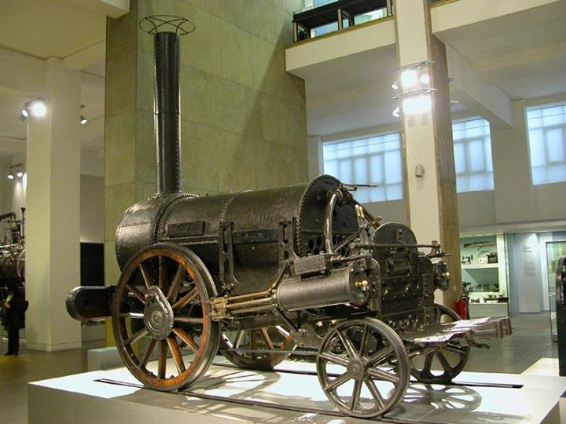

A gőzmozdony a vasutakon első ízben használt géperejű vontatójármű, precízebben a gőzmozdony vontatott járművek (vasúti kocsik) továbbítására szolgáló vasúti vontatójármű. Erőgépe egy gőzgép, amelynek működtetéséhez szükséges gőzt a jármű kazánjában állítják elő. A kazán fűtéséhez szükséges tüzelőanyagot (általában kőszén, ritkábban fa, vagy fűtőolaj) és a kazántápvizet a mozdony a járműre épített tartályokban (szertartályos gőzmozdony), vagy a mozdonyhoz kapcsolt külön szerkocsiban (szerkocsis gőzmozdony) viszi magával.A kazánban termelt gőz energiáját a gépezet gőzhengerei alakítják mechanikai munkává. A gőzhengerek táplálása, illetve a bennük lejátszódó munkafolyamat alapján beszélhetünk csak frissgőzzel táplált ikergépezetű, vagy a gőz nyomását két lépcsőben (a nagy- és a kisnyomású hengerekben) felhasználó, osztott expanziójú, vagy kompaund gépezetről. Magyarországon 1959-ig gyártottak gőzmozdonyokat és 1984-ben vonták ki őket a menetrend szerinti vasúti forgalomból.Azóta csak nosztalgiavonatok élén közlekednek.

Forrás:Wikipdia🔎